PACOM TACTICAL ARCHIVE
INTELLIGENCE & ENTROPY ENGINE DATA REPOSITORY // 2026
1946
제2차 세계대전 종전
글로벌 패권 구도의 재편 및 냉전 체제 돌입.
1967
소련, 미지의 물질 '안티 엔트로피' 발견
소비에트 연방이 엔트로피(무질서도)를 임의로 감소시킬 수 있는 기적의 물질을 발견하여 극비리에 연구 개시.
1986
체르노빌 엔트로피 엔진 붕괴 사고
엔진 폭주로 물리법칙이 붕괴되며 최초의 시간 붕괴 지역 형성. 내부 관측 불가 현상 발생.
1987
최초의 능력 발현자 보고
체르노빌 사고 여파로 일부 인류 체내에서 안티 엔트로피가 생성, 특수 능력을 구사하는 이능력자 등장.
1993
미국 화성 유인 착륙 성공
우주 개발 성과 달성. 미·소 간의 안티 엔트로피 기술 및 우주 개발 경쟁 극단화.
1995
유라시아 소비에트 연방 창설
기술적 우위를 바탕으로 붕괴 위기를 극복한 소련이 유라시아 공산권 국가들을 통합.
2003
제3차 세계대전 발발
이념 대립 및 엔진 확보를 위한 전면전. 안티 엔트로피 시간 무기 및 능력자 전장 대거 투입.
2013
'대붕괴' (The Great Collapse)
농도 임계점 돌파. 전 세계 동시다발적으로 시간 붕괴 현상이 발생하며 인류 문명 완전 마비.
2026 (PRESENT)
시간 붕괴 약화 및 국지전 재개
붕괴 현상 소강상태. 무한한 동력원 '엔트로피 엔진' 확보를 위해 각 생존 세력의 전술 작전 재개.
[ALLIED] NATO 태평양 통합 사령부
대붕괴 이후 아시아-태평양 지역에 고립된 나토 사령부 잔존 병력. 지역 민간 생존자를 규합하여 체계적인 군사 기지를 재건했다. 본 데이터베이스의 관리 주체.
- 분대 단위 팀워크 및 구시대 첨단 기술 연계
- 목표: 질서 회복 및 엔트로피 엔진 통제
[HOSTILE] 유라시아 소비에트 연방
과거 거대 정부였던 유라시아 연방 극동사령부 잔당. 지휘계통 파편화 이후 독자적으로 무력을 행사 중인 가장 위협적인 적대 세력.
- 압도적 무력투사 및 철저한 내부 통제
- 목표: 엔진 독점을 통한 제국 재건
[NEUTRAL] 국제 중립 연구 재단
대붕괴 이전 UN 직속 '시간연구부'의 후신. 비무장 학술 기관을 표방하며 능력의 본질을 과학적으로 추적하고 있다.
- 세력 간 분쟁 완전 중립 및 비교전 원칙
- 목표: 치명적 위험 능력 통제 및 현상 해석
[THREAT] 엔트로픽 교단
대붕괴를 '신의 축복'으로 규정하고 무질서를 숭배하는 극단주의 광신도 테러 단체. 예측 불가 비대칭 전력 보유.
- 자살에 가까운 광신적 돌격 및 능력의 파괴적 활용
- 목표: 엔진 완전 과부하(2차 붕괴 유도)
[UNCLASSIFIED] 무소속 생존자
특정 체제에 소속되기를 거부하고 황무지를 독자적으로 개척하는 인원들. 변수가 많아 작전 수행 시 요주의 대상.
- 개인 생존술 및 탐험 능력 극대화
- 대응 지침: 적대 행위 없을 시 교전 회피
ALLIED PERSONNEL // NATO PACOM
메아 (MEA)
ID-E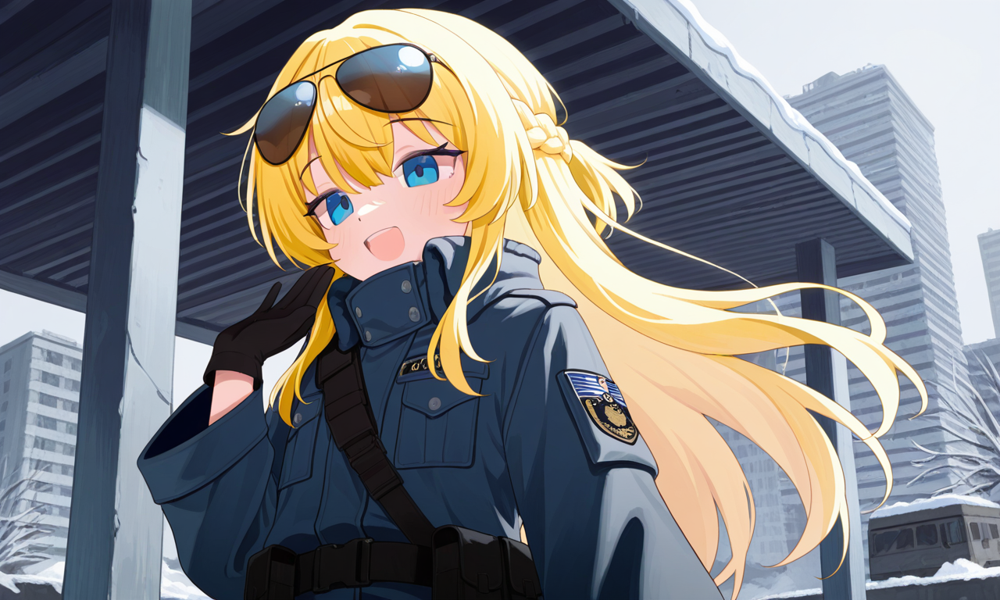
리나 (LINA)
ID-F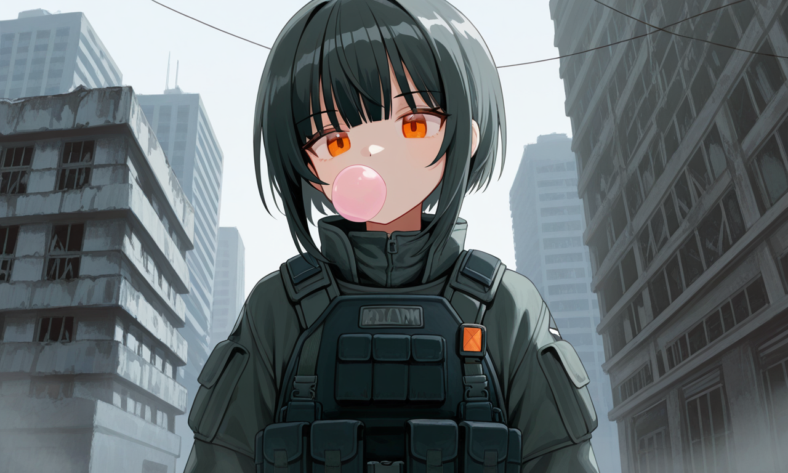
에피 (EFFIE)
ID-G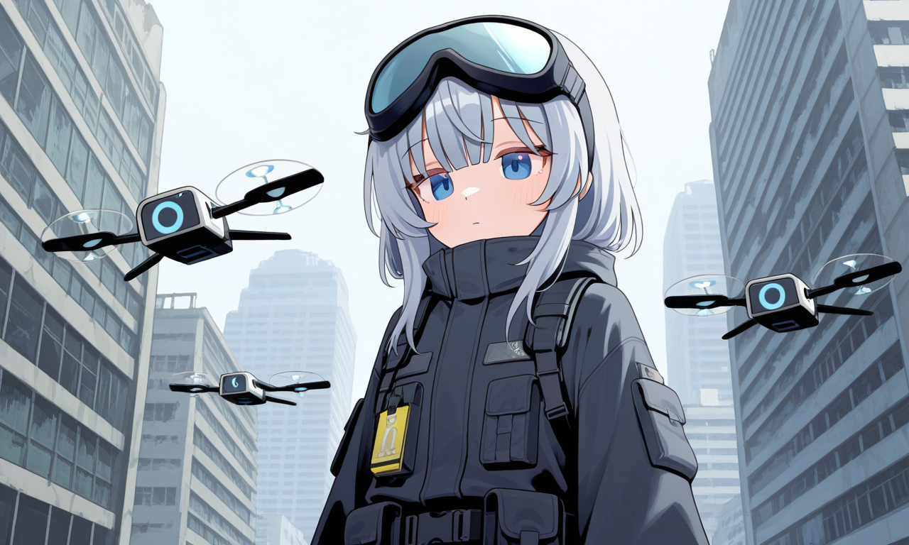
카일라 (KAYLA)
ID-H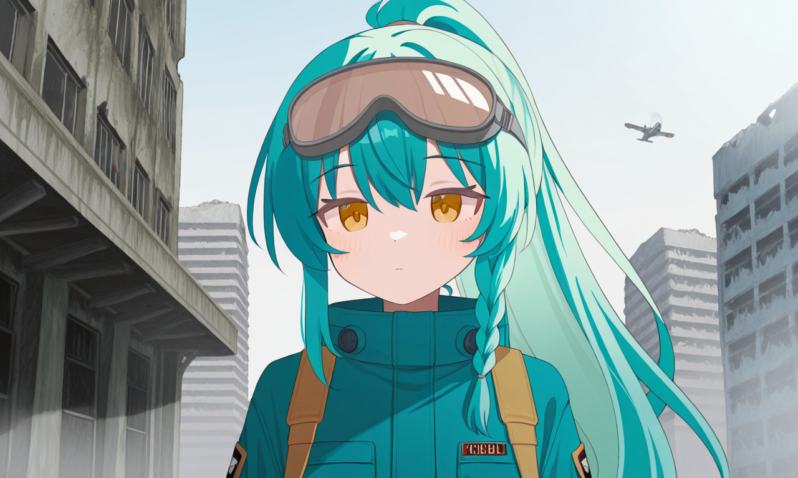
HOSTILE TARGETS // EURASIAN SOVIET
율리야 (YULIYA)
ID-A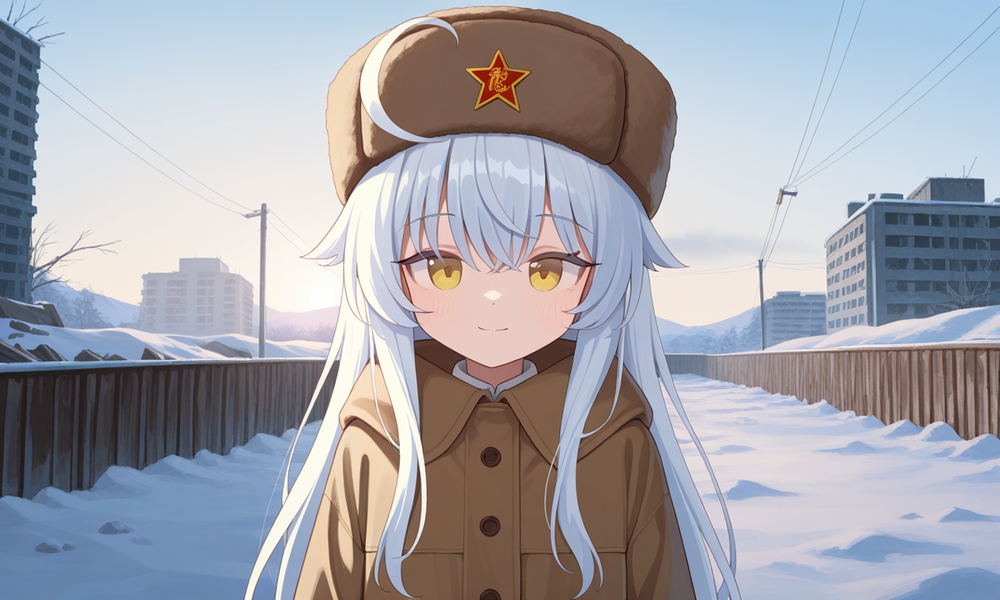
키로프 (KIROV)
ID-B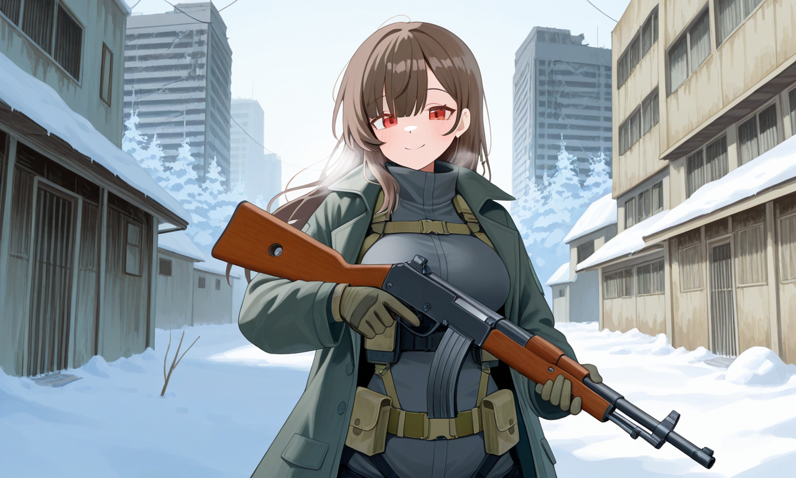
툴라 (TULA)
ID-C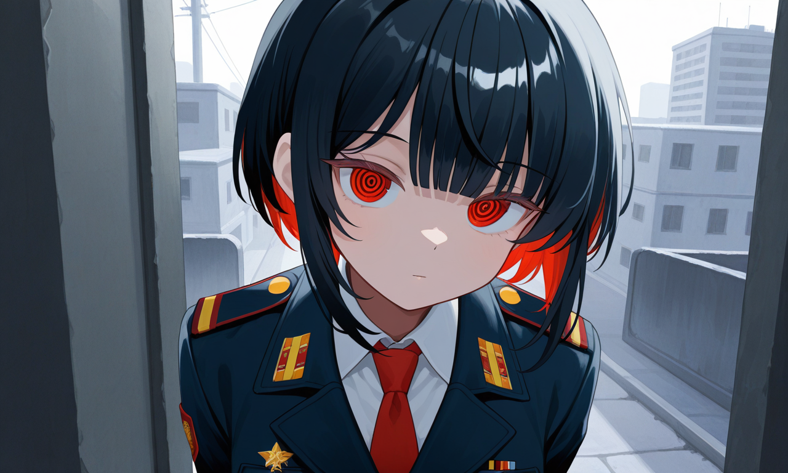
옥시나 (OKSINA)
ID-DNEUTRAL // INTL. RESEARCH FOUNDATION
이다 (IDA)
ID-I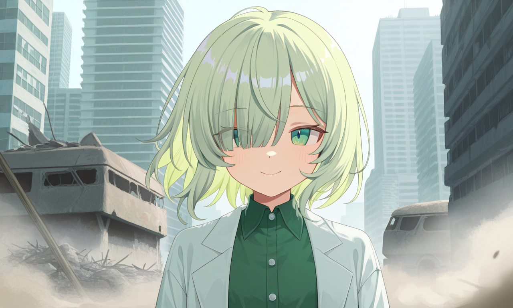
클라라 (CLARA)
ID-J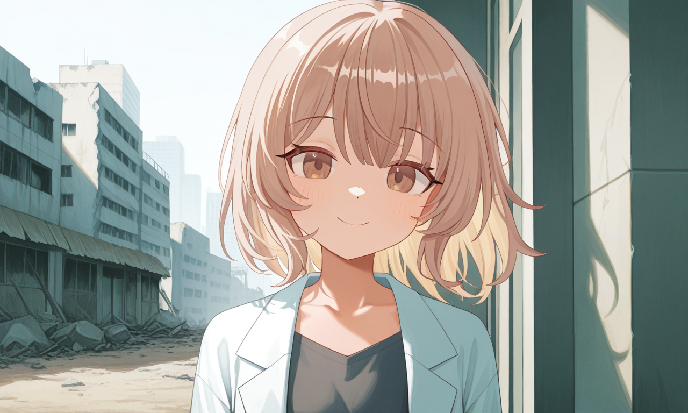
THREAT TARGETS // ENTROPIC CULT
세린 (SERIN)
ID-K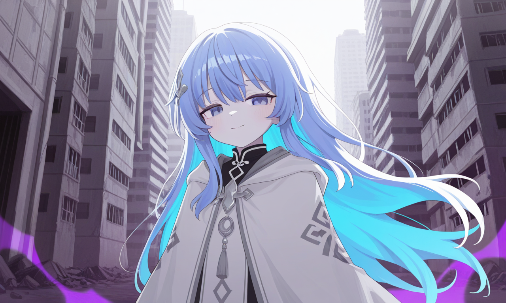
메리 (MARY)
ID-L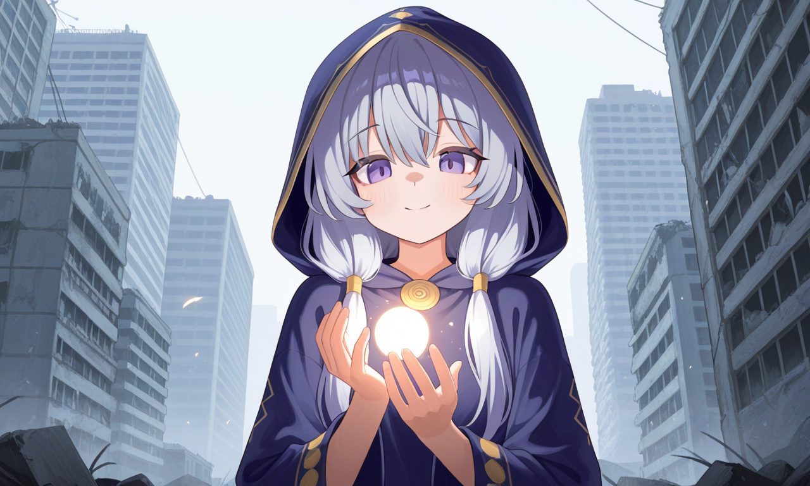
미아 (MIA)
ID-M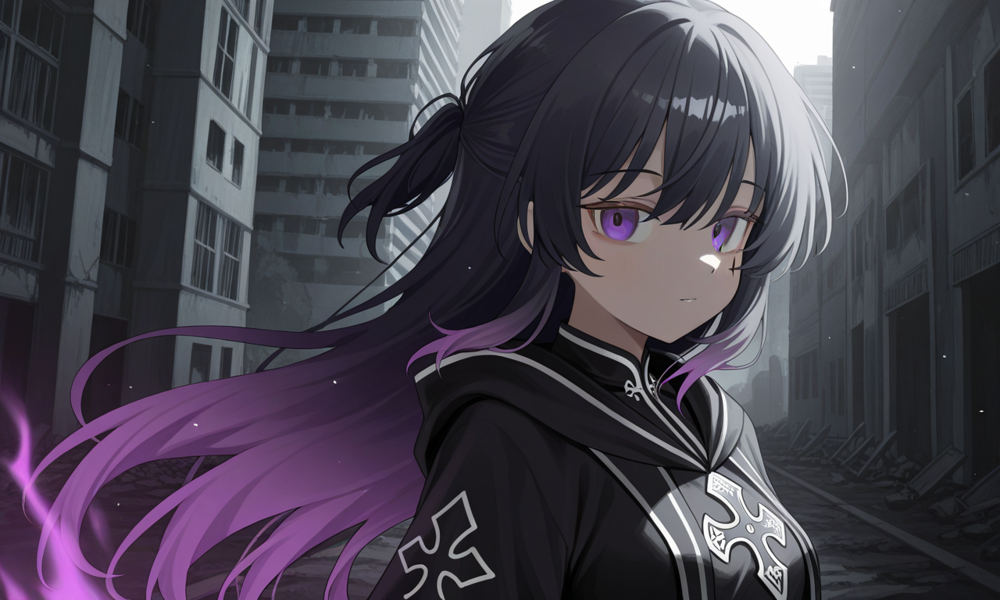
UNCLASSIFIED // WANDERERS
니아 (NIA)
ID-N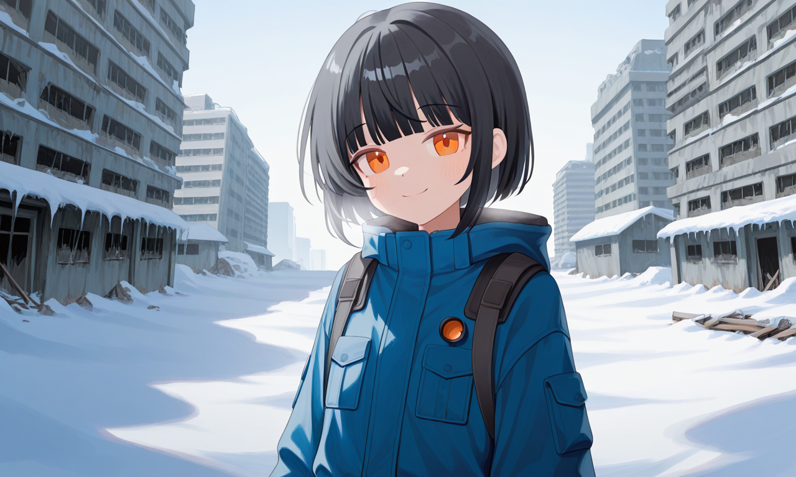
하루 (HARU)
ID-O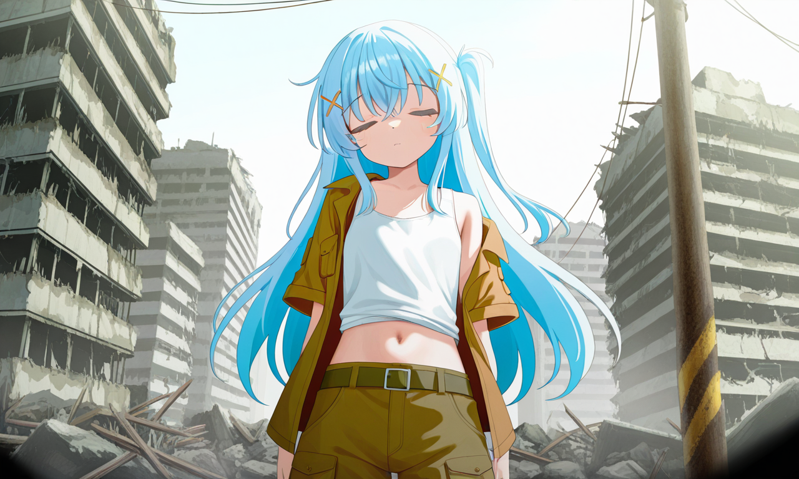
임나 (IMNA)
ID-P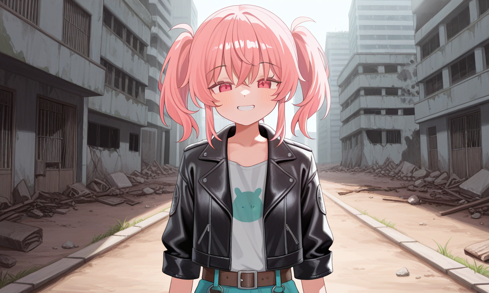
채유리 (YURI)
ERR-Q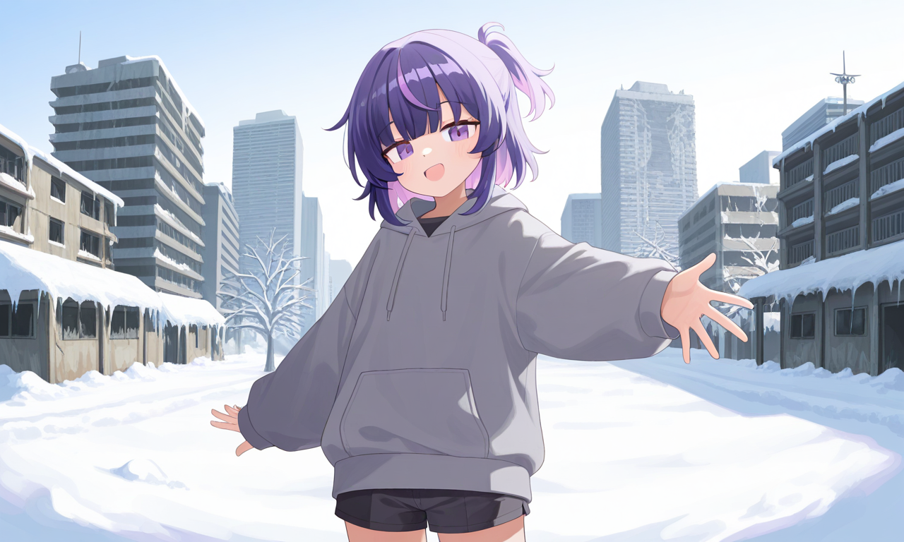
[시스템 경고] 추적 불가. 시스템 방화벽 무시 이력 다수. 상세 정보는 클릭하여 열람.